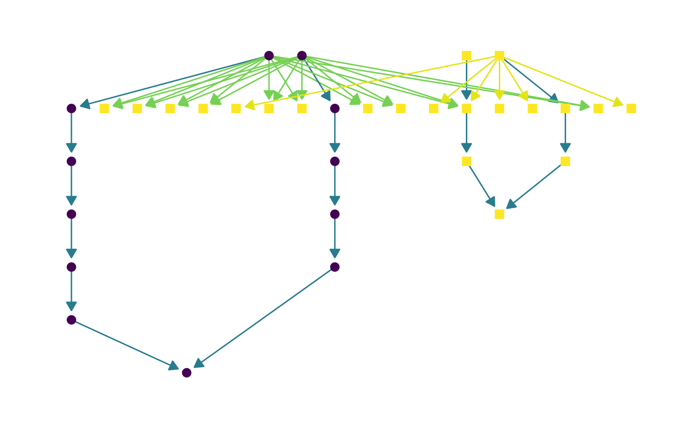
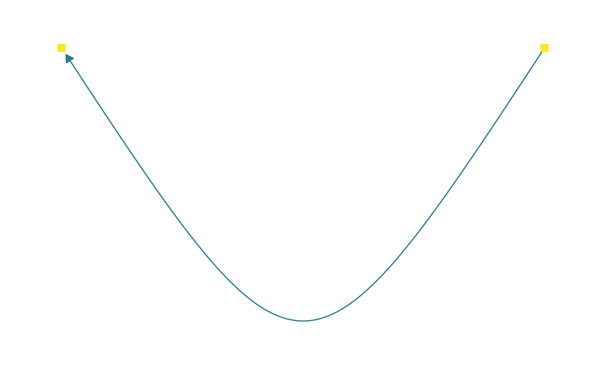

This function allows users to create networks based on FOBI relationships.
A character vector with FOBI term IDs.
A character string indicating desired relationships between provided terms. Options are 'anc' (for ancestors) and 'des' (for descendants). Default is NULL and all information related with input terms will be provided.
A character vector indicating which properties should be plotted. Options are 'is_a', 'BiomarkerOf', and 'Contains'. By default all of them are included.
A character string indicating the type of layout to create. Options are 'sugiyama' (default) and 'lgl'.
Logical indicating if node names should be plotted or not.
Numeric value indicating the size of labels.
Logical indicating if legend should be plotted or not.
Numeric value indicating the size of legend.
A character string indicating the legend position (if legend parameter is set to TRUE). Options are 'bottom' (default) and 'top'.
Logical indicating if the shape of the edges shape should be curved or not.
Numeric value indicating the size of graph points.
FOBI table obtained with `parse_fobi()`. If this value is set to NULL, the last version of FOBI will be downloaded from GitHub.
A ggraph object.
Pol Castellano-Escuder, Raúl González-Domínguez, David S Wishart, Cristina Andrés-Lacueva, Alex Sánchez-Pla, FOBI: an ontology to represent food intake data and associate it with metabolomic data, Database, Volume 2020, 2020, baaa033, https://doi.org/10.1093/databa/baaa033.
terms <- c("CHEBI:16164","CHEBI:16243","FOODON:00001139","FOODON:00003274","FOODON:00003275")
fobi_graph(terms, get = "anc")

# Red meat related FOBI biomarkers
fobi_graph(terms = "FOBI:0193",
property = c("is_a", "BiomarkerOf"),
layout = "lgl", curved = TRUE) # set labels = TRUE to display node names
